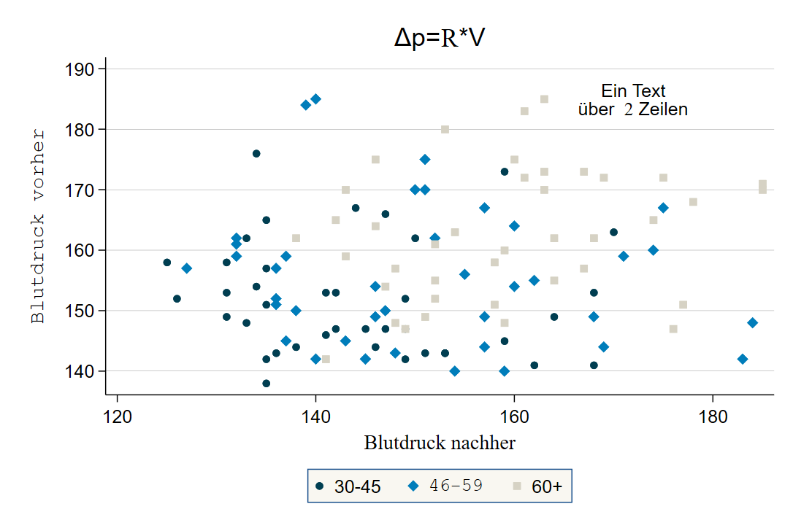
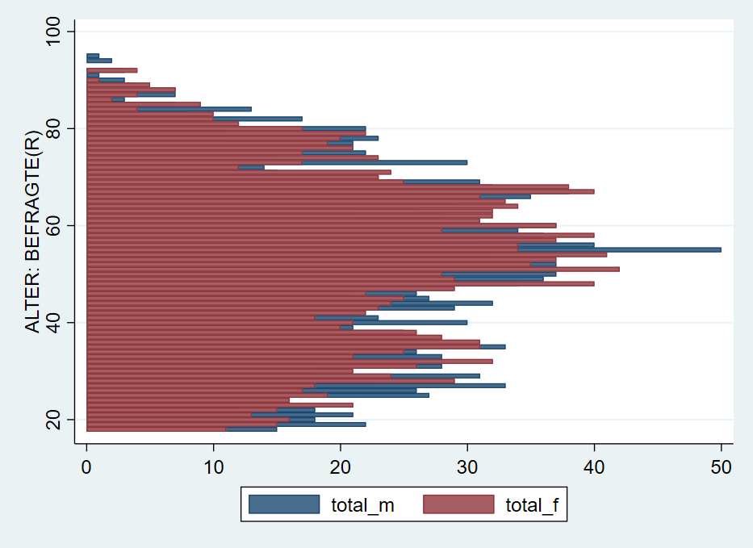
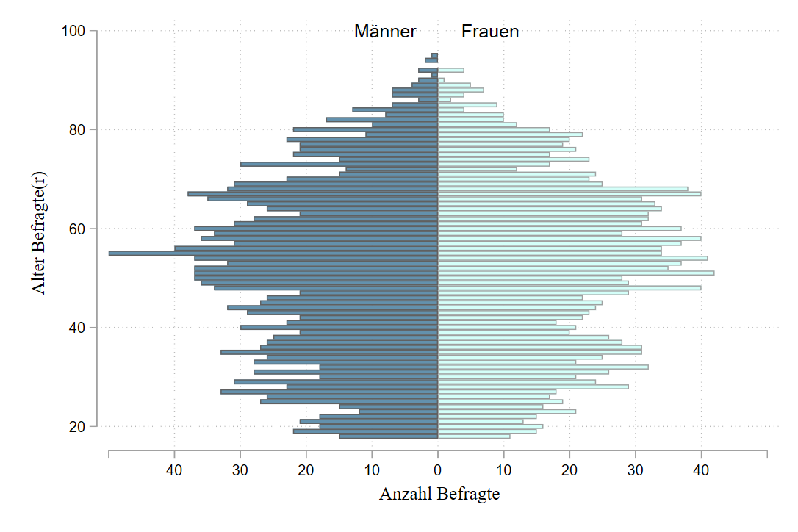

- Herzlich Willkommen!
- 1 Einstieg in Stata
- 2 Arbeiten mit Datensätzen in Stata
- 2.1 Vorab: Befehlsstruktur & Hilfe
- 2.2 Auszählen & Überblick erhalten
- 2.3 Neue Variablen erstellen
- 2.4 Bestehende Variablen verändern
- 2.5 gen ist gut, Kontrolle ist besser
- 2.6 Fehlende Werte
- 2.7 if Bedingungen und fehlende Werte
- 2.8 keep & drop
- 2.9 Labels und if-Bedingungen
- 2.10 Nochmal von vorne: Daten neu laden
- 2.11 Speichern
- 2.12 Übungen 2
- 2.13 Profi-Übungen 2
- 3 Deskriptive Statistik
- 4 Datenvisualisierung in Stata
- 5 Zusammenhangsmaße
- 6 Zusammenhänge 2
- 7 Inferenzstatistik I
- 8 t-Tests
- 9 Hypothesentests
- 10 Ergebnisexport & weitere Tipps
- 11 Fortgeschrittene Themen
4.9 Anhang & Beispiele zum selbst anpassen
Im Folgenden finden sich nun einige Beispiele mit (sehr) vielen Optionen als Vorlage für eigene Anpassungen. Trial & error wärmstens empfohlen!
4.9.1 Boxplot
Wie oben gezeigt, muss für gruppierte Boxplots (hier nach Geschlecht) muss die dargestellte Variable zunächst aufgesplittet werden:
cd ""
use "Allbus_2018.dta", clear
replace inc = . if inc < 0
replace age = . if age < 0
egen age_c = cut(age), at(20,35,50,65) // Alter in Gruppen
lab def agec1 20 "20-34" 35 "35-49" 50 "50-64" // Gruppen labeln
lab val age_c agec1
// Einkommen in Männer und Frauen splitten:
gen inc_m = inc if sex == 1
gen inc_f = inc if sex == 2
lab var inc_m "Männer"
lab var inc_f "Frauen"graph box inc inc_f, over(age_c) ///
scheme(lean1) ///
box(1, color("0 41 93")) marker(1, mcolor("0 41 93") msymbol("o") ) medline(lcolor("204 175 105")) /// optionen box1
box(2, color("146 143 107")) marker(2, mcolor("146 143 107") msymbol("o") ) /// box2 anpassen
legend(cols(2) pos(12) region(fcolor("249 247 241") lcolor("16 74 138"))) /// Legende
ytitle("{stSerif:Einkommen}{superscript:2018}") b1title("Alter") /// Achsenbeschriftung
title("Einkommen") caption("{bf:Quelle}: Allbus 2018 {it:eigene Berechnungen}",position(5)) /// titel usw.
plotregion(fcolor("252 251 248")) graphregion(fcolor("249 247 241")) // Hintergrundfarben
4.9.2 Scatterplot
Hier ein angepasster Scatterplot, welcher aus drei überlagerten scatter besteht:
graph twoway ///
( scatter bp_before bp_after if agegrp == 1, mc("0 62 81") msymbol(o) ) /// Altersgruppe 1 -> dunkle Punkte
( scatter bp_before bp_after if agegrp == 2, mc("0 125 186") msymbol(d) ) /// Altersgruppe 2 -> blaue Rhomben
( scatter bp_before bp_after if agegrp == 3, mc("214 210 196") msymbol(s) ) /// Altersgruppe 3 -> Vierecke
, scheme(lean2) /// Schema
legend(lab(1 "30-45") lab(2 "{stMono:46-59}") lab(3 "60+") lcolor("16 74 138") region(fcolor("249 247 241") lcolor("16 74 138")) pos(6) cols(3) ) /// legende -> 3 Spalten
xtitle("{stSerif:Blutdruck nachher}") ytitle("{stMono:Blutdruck vorher}") /// Achsenbeschriftung
text(185 172 "Ein Text" "über {stSerif: 2} Zeilen") title("{&Delta}p={stSerif:R}*V") // Textfeld einfügen
4.9.3 Bevölkerungspyramide
Häufig ist die größte Herausforderung, die Daten so umzustellen, dass sie zum gewünschten graph-Befehl passen. Ein Beispiel ist die Erstellung einer Bevölkerungspyramide aus den Allbusdaten:

Auch diese Bevölkerungspyramide lässt sich als Stata-Grafik erstellen. Allerdings müssen dazu einige Zwischenschritte durchlaufen, die fortgeschrittene Datenaufbereitung mit collapse voraussetzen. Außerdem könnte ein Teil der Aufbereitung mit separate abgekürzt werden. Mehr Informationen dazu finden sich am Ende dieses Skripts in Kapitel 11.
Die grundsätzliche Funktion für die Bevölkerungspyramide ist ein Balkendiagramm mit graph twoway bar , horizontal. Die Länge der Balken soll jeweils durch die Anzahl der Fälle in jeder Altersstufe, getrennt nach Geschlecht, bestimmt werden. Dazu müssen wir also zunächst die Anzahl der Befragten pro Alterstufe und Geschlecht bestimmen. Wenn wir den Allbus 2018 laden, haben wir ja einen Datensatz mit einer Zeile pro Person. Was wir jetzt aber benötigen ist eine Variante, in der wir den Datensatz sozusagen “zusammenschieben”: wir brauchen jeweils eine Zeile pro Altersstufe und Geschlecht und eine Variable mit der Zahl der Befragten.
## age sex Anzahl_Befragte
## 1 18 1 15
## 2 18 2 11
## 3 19 1 22
## 4 19 2 15
## 5 20 1 18
## 6 20 2 16Um dorthin zu kommen, steht uns der collapse-Befehl zur Verfügung:
cd ""
use "Allbus_2018.dta", clear
tab agec
keep if sex > 0
keep if agec > 0
collapse (count) respid , by(sex age)
list in 1/8Unter respid ist jetzt die Zahl der Befragten in der jeweiligen Kombination aus age und sex abgelegt:
## age sex respid
## 1 18 1 15
## 2 18 2 11
## 3 19 1 22
## 4 19 2 15
## 5 20 1 18
## 6 20 2 16
## 7 21 1 21
## 8 21 2 13Um verwirrung zu vermeiden, benennen wir respid in total um:
Allerdings möchten wir jetzt die Angaben für Frauen und Männer in getrennte Variablen ablegen.12
## age sex total total_m total_f
## 1 18 1 15 15 .
## 2 18 2 11 . 11
## 3 19 1 22 22 .
## 4 19 2 15 . 15
## 5 20 1 18 18 .
## 6 20 2 16 . 16
## 7 21 1 21 21 .
## 8 21 2 13 . 13
## 9 22 1 18 18 .
## 10 22 2 15 . 15Jetzt können wir daraus ein Balkendiagramm erstellen, wobei wir zwei twoway kombinieren - wie schon beim Scatterplot:

Was hier noch fehlt ist, die Umorientierung der Zahlen für die Männer “nach links”. Dazu multiplizieren wir total_m mit -1:
Damit dann verwenden wir neg_total_m für die Balken der Männer:
 Mit
Mit xlabel und legendnoch einige Anpassungen, außerdem können wir mit text noch Beschriftungen hinzufügen:
twoway( bar neg_total_m age, horizontal )(bar total_f age, horizontal) ,xlabel( -40 "40" -30 "30" -20 "20" -10 "10" 0 10(10)40 ) legend(off) text(100 -8 "Männer") text(100 8 "Frauen")
Anpassung der Farbe, des Schemas, …:
twoway ///
(bar neg_total_m age, horizontal fcolor("60 117 153")) ///
(bar total_f age, horizontal fcolor("201 255 247")) , ///
xlabel( -40 "40" -30 "30" -20 "20" -10 "10" 0 10(10)40 ) ///
legend(off) text(100 -8 "Männer") text(100 8 "Frauen") ///
xscale(range(0 50)) xtick(-50 (10) 50 ) ///
scheme(plotplain) xtitle("{stSerif: Anzahl Befragte}") ytitle("{stSerif: Alter Befragte(r)}")
4.9.4 Boxplot
Definition der Bestandteile eines Boxplots:
- ggf. Ausreißer
- unterer Whisker:
q1 - 1.5* IQR - untere Grenze: 1. Quartil
- mittlere Linie: Median
- obere Grenze: 3. Quartil
- oberer Whisker:
q3 + 1.5* IQR - ggf. Ausreißer
Die Box enthält also die zentralen 50% des Wertebereichs.